<div class="textcontainer">
<p class="margin"> </p>
<h3>Week 3: Hand Tools and Fabrication</h3>
<h4>Kinetic Sculpture</h4>
<h4 style="text-align:center"><u>Planning</u><h4>
<p>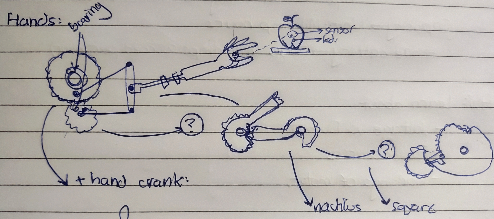</p>
<h5>My initial plan was to create a sculpture consisting of an arm reaching erratically for an apple. The basic mechanism would be driven by 2 differently sized gears, inspired by the gears below. My ultimate aim was to make these gears detachable, so that I could replace them wiuth nautilus or elliptical gears to create a different kind of motion </h5><br>
<p>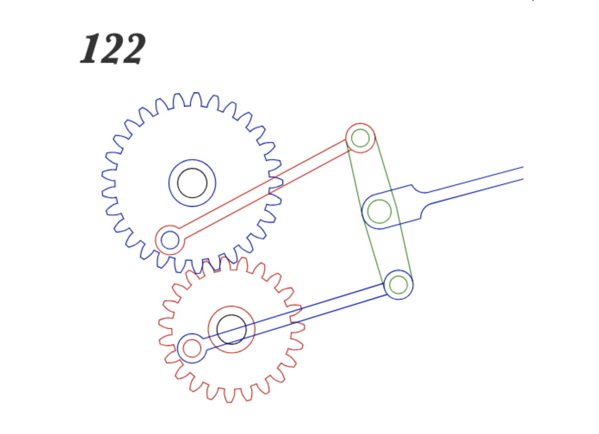</p>
<h4 style="text-align:center"><u>Sketching on fusion</u><h4>
<p>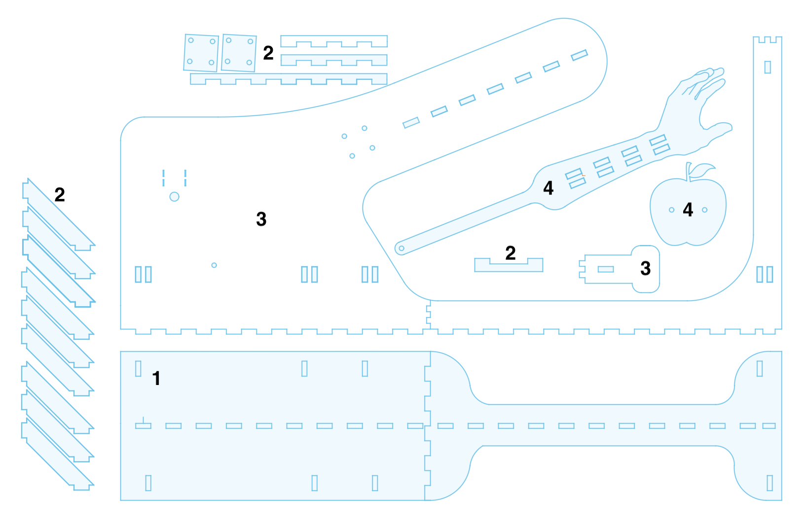</p>
<h5>Sketching was the most time-extensive part of this process. It took over 5 hours to create the sketch, due to the sheer amount of trial and error I had to do to ensure a stable structure. The system consists of four main parts (as numbered in the image): the base (1), structural supports (2), the backboard (3), and main objects (4). The gears/moving parts can be seen below.</h5><br>
<iframe src="https://muwci14.autodesk360.com/shares/public/SH286ddQT78850c0d8a4cbe1e0a86c56585b?mode=embed" width="100%" height="500px" allowfullscreen="true" webkitallowfullscreen="true" mozallowfullscreen="true" frameborder="0"></iframe><br></br>
<h4 style="text-align:center"><u>Final sculpture</u><h4>
<p>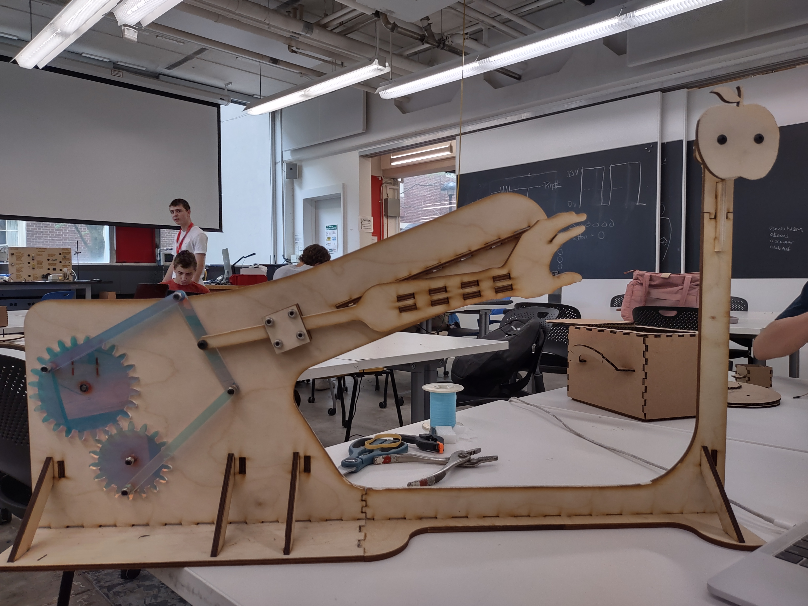</p><br><br>
<table>
<tr>
<td>
<p>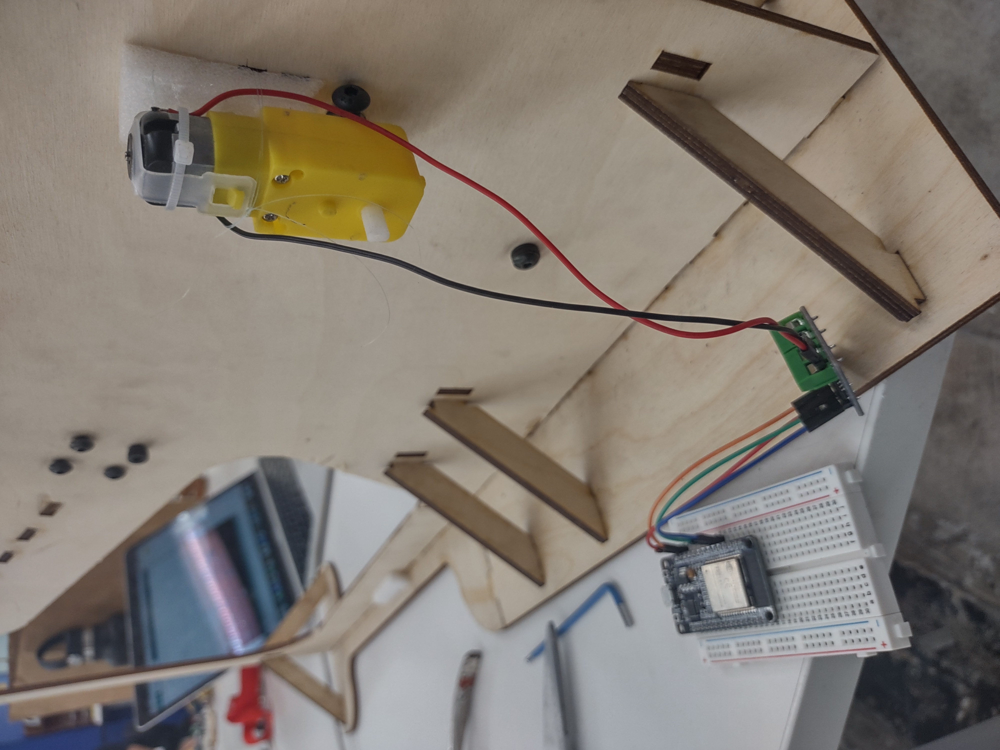</p>
</td>
<td>
<p>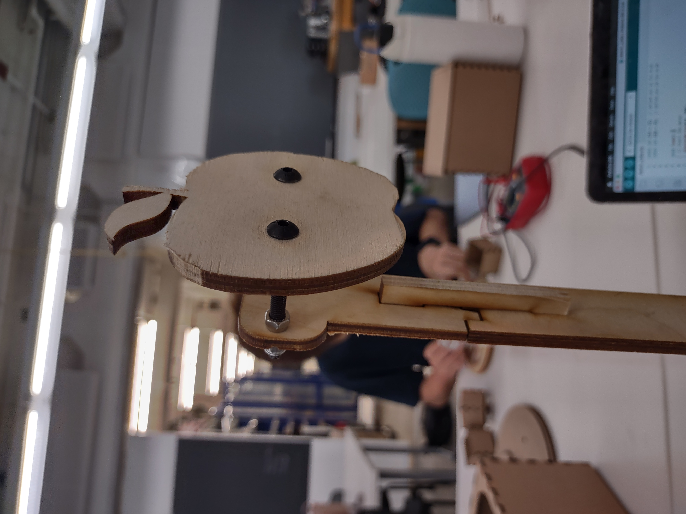</p>
</td>
<td>
<p>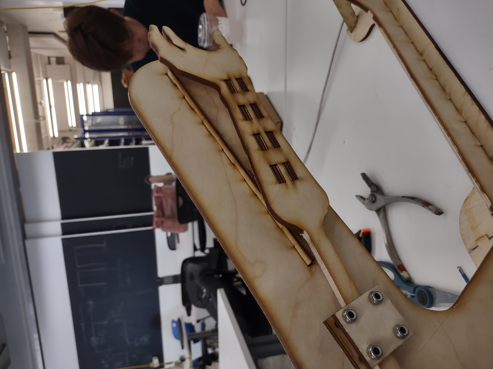</p>
</td>
<td>
<p>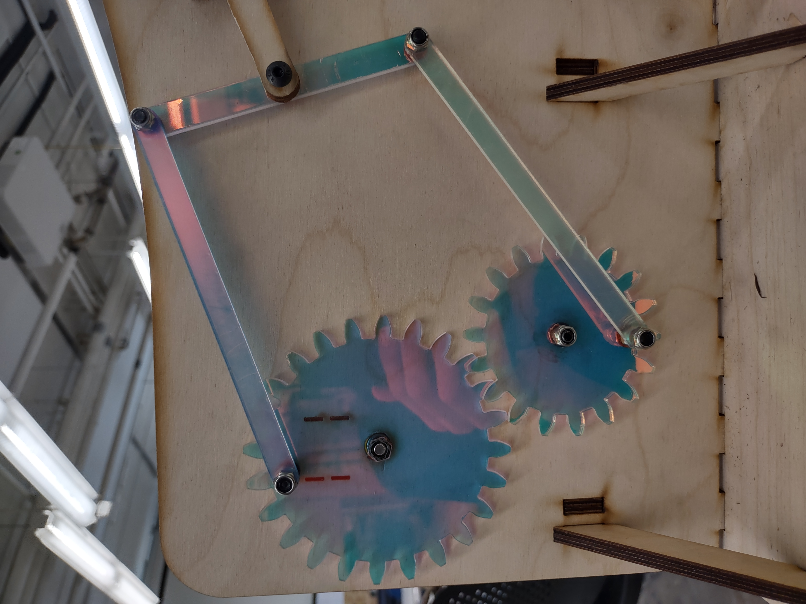</p>
</td>
</tr>
</table><br>
<video src="1000000975.mp4" autoplay loop muted playsinline style="width: 100%; height: auto;"></video>
<h4 style="text-align:center"><u>Code</u><h4>
<h5>While my initial code simply spun the motor at 60rpm, the motor continuously stalled, so I added a 100ms burst of faster rotation to keep it moving</h5>
<p>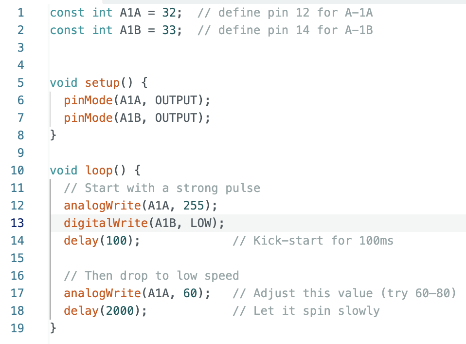</p><br>
<h4 style="text-align:center"><u>Problems</u><h4>
<h5>I faced many issues during the build. I ahad trouble making the gears align due to their thickness, The laser cutter didn't full cut throught he wood despite my tester coming out perfectly, so I had to remove every piece by chisel and band saw; many of the structural pieces cracked, my gear was stalling due to the low rotation speed. However the biggest issue I faced was attaching the gear to the motor. My aim was to make it detachable, so I attached a nut to the center of my gear and epoxied a scre to my gear shaft. However, the fit wasn't tight enough, and the gear kept screwing itself off rather than moving with the shaft. Another issue I faced was the imperfect fit of many of my pieces, due to a miscalculation of the wood thickness. I had to chisel each tooth by hand individually to have it fit. Below are photos of the major two problems: <b>the screw-shaft and the chiselling crime scene<b></h5><br>
<table>
<tr>
<td>
<p>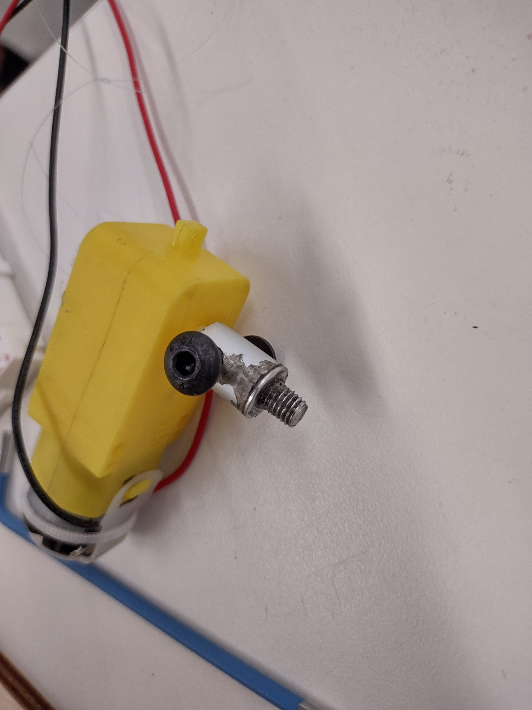</p>
</td>
<td>
<p>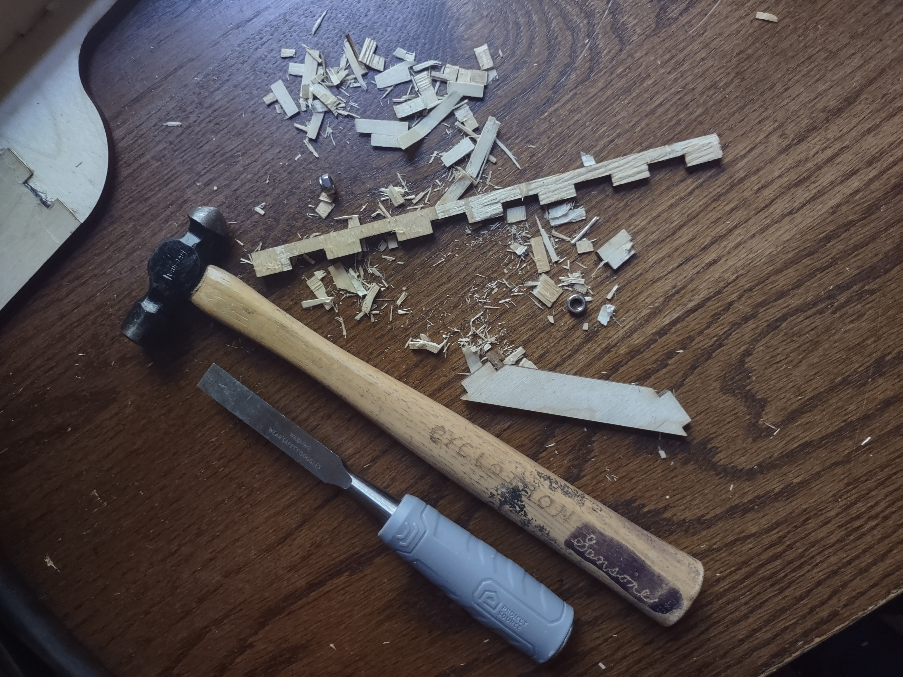</p>
</td>
</tr>
</table><br>
<h4 style="text-align:center"><u>Solutions</u><h4>
<h5>Looking ahead, I need to extend the screw attached to the shaft to lock it in with another screw, and reprint my gears on wood. I also want to learn from my mistakes in laser cutting and be less hasty the next time I cut!</h5><br>
</div>